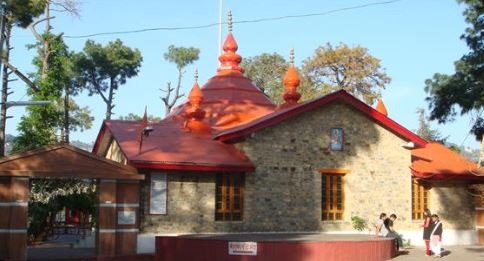

Sankat Mochan Temple is a temple dedicated to Hindu deity Hanuman in Shimla, Himachal Pradesh, India. The temple is Shimla's second most visited Hanuman temple after Jakhu Temple.At present the locals come here everyday, as well as tourists who visit Shimla. Because it is Lord Hanuman temple, every Tuesday and Saturday a lot of people visit, and on Sundays huge number of people visit the temple. On each Sunday a large Bhandara is also organised here. In the vicinity of the temple there is also the small temple dedicated to Neem Karoli Baba, which was made in 1998. The view of Shimla city is also seen from the temple.
The temple was established in 1950 by prominent religious figure Neem Karoli Baba. He got so amazed by the beauty of Shimla that he spent 10–12 days in the forest area. Here while doing Yoga and meditation Baba got some instinct that Hanuman temple should be built on this site. Baba told his wish to his followers and eventually in the year of 1962 the then Lieutenant Governor Raja Bajrang Bahadur Singh and other followers started the construction of the temple. The idols of Lord Rama-Sita-Lakshmana, Lord Shiva and Lord Ganesha were also established in the temple. The temple was inaugurated on 21 June 1966 on the day of Tuesday. Gradually the temple gained a lot of popularity and faith.

Bus Stop, Sankatmochan, Bagh, Shimla, Himachal Pradesh 171004
The temple is located at an altitude of 1,975 m above sea level on Kalka-Shimla highway. The natural forested environment attracts tourists . Views of Shimla city are also seen from the temple..